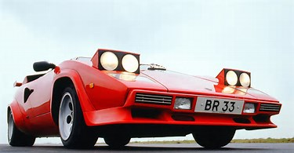

The Thrilling World of Sports Cars
The Allure of Sports Cars
Sports cars have always held a special place in the hearts of automotive enthusiasts. These high-performance machines are not merely modes of transportation; they are statements of power, luxury, and elegance. From their sleek, aerodynamic designs to their roaring engines, sports cars encapsulate the spirit of speed and excitement that captivates drivers around the world.
The Art of Engineering
At the core of every sports car is a symphony of engineering marvels. Their lightweight chassis, advanced suspension systems, and precision-tuned engines are meticulously crafted to deliver unparalleled performance. These cars often boast powerful, high-revving engines that produce an intoxicating blend of horsepower and torque. The result is an exhilarating driving experience that keeps enthusiasts coming back for more.
Iconic Brands and Models
The world of sports cars is dominated by legendary brands such as Ferrari, Lamborghini, Porsche, and McLaren, each known for their unique style and innovation. Iconic models like the Porsche 911, Ferrari 488, and Lamborghini Huracán have become cultural symbols of automotive excellence. These vehicles not only represent a status symbol but also showcase the cutting-edge technology and craftsmanship that define the sports car industry.
Racing Heritage and Performance
Sports cars have deep roots in motorsport, with many manufacturers using racing as a proving ground for their innovations. The technology developed on the racetrack often finds its way into production models, enhancing their performance and handling. The thrill of driving a sports car is akin to being behind the wheel of a race car, with precise steering, lightning-fast acceleration, and the ability to take corners at breathtaking speeds.
Exclusivity and Luxury
Sports cars are more than just vehicles; they are symbols of luxury and exclusivity. From hand-stitched leather interiors to customizable features, these cars offer a level of personalization that few other vehicles can match. Owning a sports car is a statement of prestige, and many enthusiasts relish the chance to own a piece of automotive art that reflects their personality and taste.
A Symphony of Speed and Style
In the world of automotive design and engineering, sports cars stand out as the embodiment of speed, precision, and elegance. These machines are more than just transportation; they are a celebration of human ingenuity and a testament to our desire for excitement and adventure on the open road. Whether you're a die-hard enthusiast or simply appreciate the beauty of these iconic vehicles, sports cars continue to be a thrilling and timeless part of automotive history.